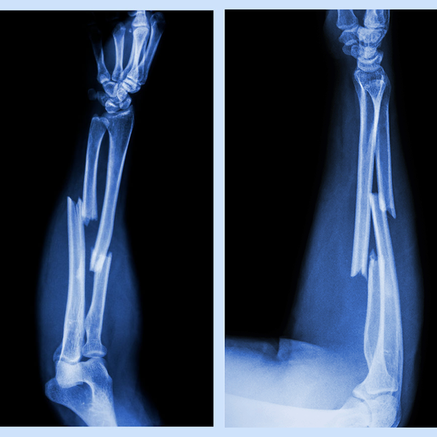
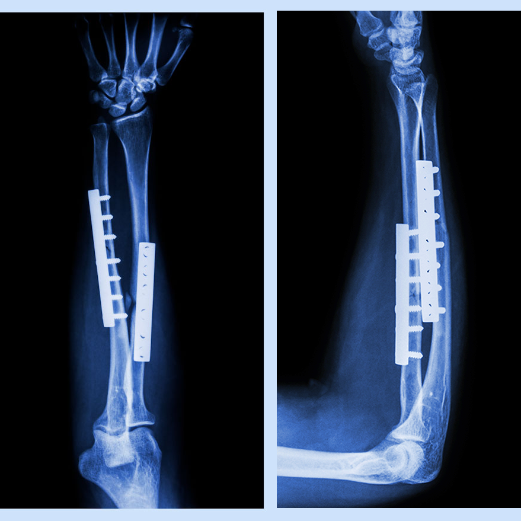

Bones · Fully healed
Radius & Ulna
The two bones in his forearm that broke. They're healed now, so we can start working on his wrist's range of motion.
How a basketball player broke both bones in his forearm, and how we're helping him get back on the court.
Jackson loves basketball and would play all day if he could. One day he went up for a dunk, his arm got caught in the rim, and he fell hard and landed awkwardly on the ground. He came in with a painful, swollen right arm.

His X-ray showed a lot of swelling and a break in both the distal radius and ulna of his right arm, the one that got stuck in the hoop. The break was badly displaced, so he needed surgery to keep the bones stable.

Surgeons put in metal plates and screws to hold the bones in place and make sure they lined up the right way. It was most likely a transverse fracture, since the break goes almost straight across and is perpendicular to the bone. Hitting the rim bent the bones with so much force that they eventually broke.
Jackson spent about 8 weeks in a cast or splint, doing gentle finger and shoulder movements so he wouldn't get stiff. His radius and ulna are now fully healed, so the next step is exercises to get back the range of motion in his wrist.
Because the break was severe and badly displaced, there was a lot of soft tissue damage around it. His flexibility should come back within a few weeks of starting PT, but getting all his strength back for basketball will take more time.
There are a lot of muscles in the wrist, called the carpal muscles. These are the bones and muscles his plan focuses on, and what working them will do for him.
The two bones in his forearm that broke. They're healed now, so we can start working on his wrist's range of motion.
Moves the wrist toward the thumb side. Working it will help him turn his wrist inward on the thumb side more.
One of the muscles that bends the wrist. Working it will help him bend his wrist toward himself more.
Also helps bend the wrist. Together with the flexor carpi ulnaris, it's key to getting his flexion back.
I liked that my physical therapists made a plan just for me. They worked closely with me and gave me exercises that targeted my injured arm, and every session worked on my wrist strength, flexibility and range of motion. They told me why each exercise mattered and made sure I was doing it right so I wouldn't get hurt again. They also changed my plan as I got better and when my schedule got busy. Over time I could really feel the difference, and I felt confident using my arm again. Their help are getting me back to playing basketball safely.— Jackson's Review